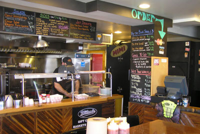

Wilson's
Real Pit Barbeque
Cooked Slow & Ready to Go!

Sign Up !! Join Wilsons Birthday Club , get free Updates and Discount! "We Value Your Privacy"
SMOKIN' & OPEN
THURS - SUN
11:30am - Close
Click here to follow us on FACEBOOK!!!
SMOKIN' FREE-RANGE TURKEYS & HAMS FOR THE 2011 HOLIDAYS!! Special orders only. Call to place yours today!
Fairfield now has its own authentic, Southern-style, take-out barbecue joint with the opening of the new Wilson’s Barbecue at 1851 Post Road, Fairfield. Drawing on experience as both a competitor in and a judge of national barbecue contests, local entrepreneur and barbecue pit master Ed Wilson is as he says, “bringing the South… North.” The new restaurant’s menu includes the most popular Southern barbecue favorites. All are slow cooked in the restaurant’s own hardwood pit. In fact, all the items on the menu are made right on the premises from original Southern recipes. Ready to take out, the barbecue can also be enjoyed in the restaurant when there’s an open stool.
The Wilson's Barbecue menu reads like an eating tour of the South: Eastern Carolina Pulled Pork, Memphis and St. Louis Style Ribs, Texas-Style Brisket and Sausage that actually comes from Texas. Lighter fare includes smoke-cooked, free-range chicken and a variety of salads. Pulled Pork, Brisket or smoked Sausage sandwiches are also listed and all barbeque is also available by the pound. In keeping with the Southern motif, the side dishes offered are such classic favorites as: collard greens, baked beans, mac & cheese, corn bread or biscuits. In addition, an unusual side named Mimi’s Jag, for Wilson’s Mother, is a traditional Portuguese style rice and bean dish called Jagacida that goes remarkably well with barbecue.
Wilson is quick to point out that he first learned his love for cooking and spices from his Mother. “Nobody left my Mother Mimi’s kitchen hungry. And Mimi loved spices. That’s how I learned. Most important, she taught me that real satisfaction comes as much from serving great food as it does from eating it."
Wilson's Barbecue hours are from 11:30am till closing on Thursday, Friday, Saturday and Sunday. The new restaurant is conveniently located near Exit 21 off I-95 at 1851 Post Road across from Hemlock Hardware and can be contacted by phone at: 203-319-7427 or 319-RIBS.
(Please note that website menu pricing is subject to change.)
